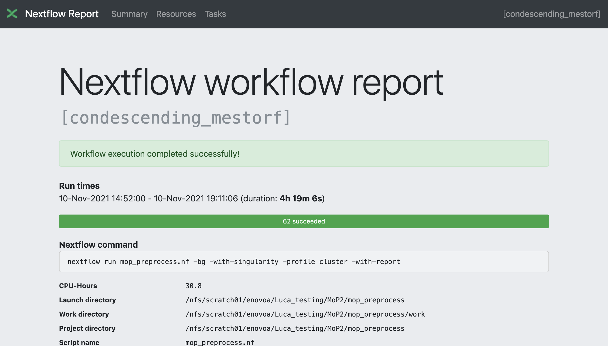
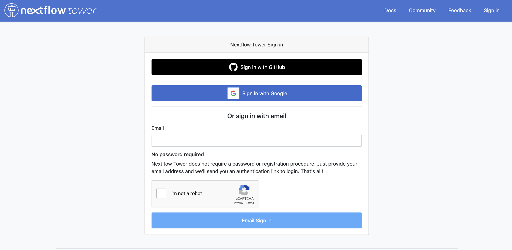
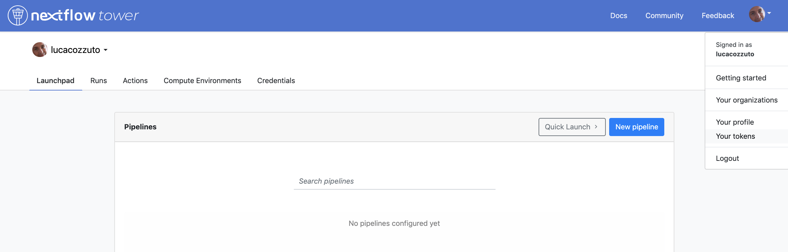
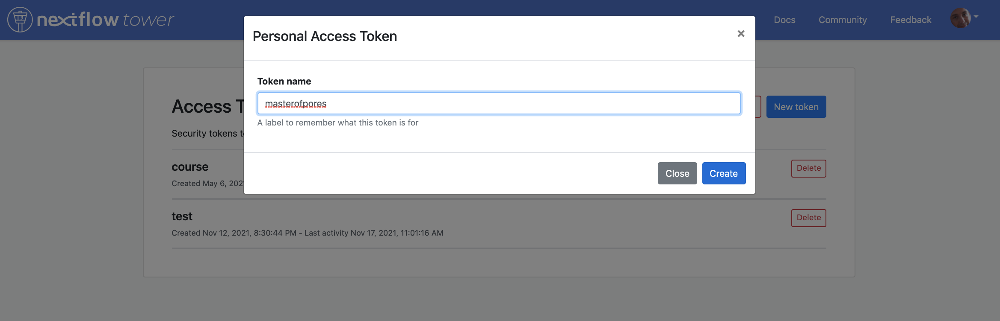
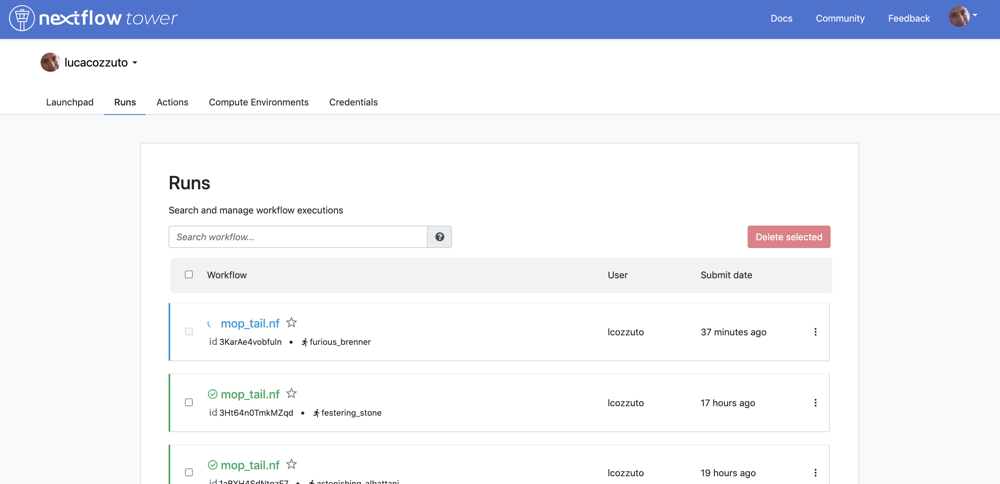
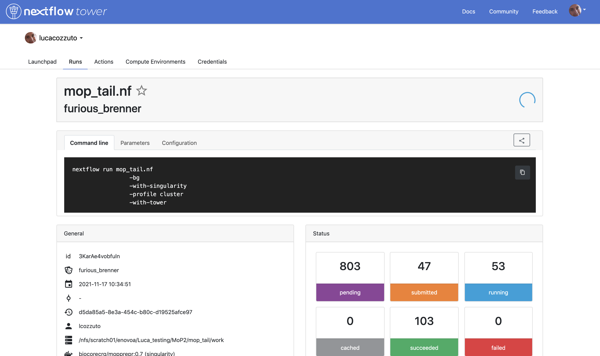

Monitoring
The resources used by each pipeline can be monitored in two ways. You can generate a html report and / or checking live the execution of your pipeline.
HTML report
A html report can be generated by adding the Nextflow parameter -with-report
nextflow run mop_preprocess.nf -with-report -with-docker -bg > log.txt
This will contain a comprehensive list of resources needed by each step of the pipeline to better tune the resources for further runs.
Here you can see an example:
{kind=link}
Live report
The execution of a pipeline run can be displayed live thanks to the tower web application. You need to log-in to the tower.nf website and then follow the instructions.
{kind=link}
You can log using one of the indicated methods:
{kind=link}
Then you can generate a personal token:
 {kind=link}
{kind=link}
And copy it for being exported and or / stored in your .bashrc file
vi $HOME/.bashrc
...
export TOWER_ACCESS_TOKEN=YOUR_LONG_TOKEN_GENERATED_BY_TOWER
Then you can source your bashrc (only needed the first time) and run your pipeline
source $HOME/.bashrc
nextflow run mop_preprocess.nf -with-report -with-docker -bg -with-tower > log.txt
Again you can log in to tower website where is shown live the progress of your pipelines!
 {kind=link}
{kind=link}